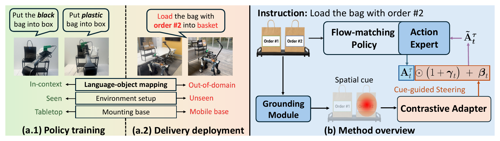

A grounding module turns free-form delivery instructions into a spatial cue; a lightweight contrastive adapter uses that cue to steer a frozen flow-matching VLA toward novel targets — no policy fine-tuning required.
Open-world delivery requires mobile manipulators to follow free-form user instructions and manipulate potentially novel objects. Existing dual-system approaches use high-level grounding models to convert language into grounded visual prompts, but their low-level controllers can remain brittle under noisy perception, dynamic scenes, and contact-rich interactions.
We instead use a pretrained flow-matching vision-language-action model as the low-level control interface, leveraging its reactivity and robustness to environmental changes while treating the grounding output as a spatial cue for policy steering. Our key insight is that the pretrained VLA already provides a strong manipulation prior, while the spatial cue supplies the missing target information needed to guide actions under novel language–object mappings.
Concretely, we introduce a lightweight cue-conditioned adapter. The adapter is first trained with contrastive objectives to produce salient and spatially discriminative cue representations, and is then supervised to predict a diagonal affine transformation over the generated action chunk, aligning policy steering with the cued target. Across tabletop and mobile-base settings, our method improves instruction following and manipulation success on both in-domain and out-of-domain objects, achieving up to near 2× improvement in average task success rate with negligible inference overhead.
The open-world delivery challenge. (a.1) The policy is trained on in-context demonstrations collected in a fixed environment. (a.2) In real-world delivery, the robot must execute manipulation under changing environments and novel language–object mappings. (b) A grounding module converts the open-ended instruction into a spatial cue, which conditions a contrastive adapter to predict affine transformations over the frozen flow-matching policy's action output, steering the generated action chunk toward the target object.

Keep the VLA frozen. Ground the instruction once. Steer the action chunk.
A zero-shot grounding module (Qwen3-VL + SAM2.1) converts free-form instructions like “load the bag with order #2” into a Gaussian heatmap at the target object — a sparse cue that is far easier to produce reliably than dense trajectory-level guidance.
Spatial-shift negatives force the cue representation to encode where the target is rather than what the scene looks like, and a residual encoding against a zero heatmap isolates cue-induced features — blocking scene-specific shortcuts.
The adapter predicts a diagonal scale-and-shift (γ, β) over the frozen policy's action chunk during flow integration — adding only ~0.02% parameters, with the full pipeline running at 15 Hz on a single RTX 5080.
Evaluation across three settings of increasing difficulty:
| Method | Tabletop | Mobile Base | ||||||
|---|---|---|---|---|---|---|---|---|
| Setting I | Setting II | Setting III | Average | Setting I | Setting II | Setting III | Average | |
| Base (π0.5) | 70.8 | 45.8 | 0.0 | 38.9 | 33.3 | 50.0 | 8.3 | 30.5 |
| Base-L | 37.5 | 8.3 | 29.2 | 25.0 | 8.3 | 0.0 | 8.3 | 5.5 |
| MOKA | 20.8 | 25.0 | 8.3 | 18.0 | 16.7 | 8.3 | 0.0 | 8.3 |
| VP-VLA | 58.3 | 45.8 | 4.2 | 36.1 | 58.3 | 66.7 | 8.3 | 44.4 |
| Ours | 83.3 | 66.7 | 66.7 | 72.2 | 83.3 | 66.7 | 41.7 | 63.9 |
The same delivery task ("load the bag with order #2") executed by each method on a static mobile platform.
Cue-conditioned manipulation across diverse instructions and scene configurations.
Combining navigation with autonomous manipulation, indoors and outdoors.